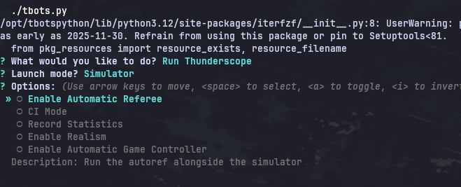

Thunderbots CLI
Rebuilding the command line tool the whole team uses, so that getting a robot running stops being something you have to memorise.

./tbots.py is how everyone on Thunderbots does everything. Launch the simulator, run a test, flash a robot, run against real hardware. It's the first thing a new member touches and the thing every member touches twenty times a day.
It was also a wall of flags. To run Thunderscope against the sim you had to know the action, the target, and which of a dozen options applied to you. If you knew the incantation it was fast. If you didn't you read the source or asked someone. I spent my first few weeks on the team being the person asking.
Problem
The obvious framing is "the tool is hard to use", which leads to me writing better docs and changing nothing.
The real problem was that the knowledge lived in our heads and in argument parsing, not in the tool. Every new member paid the same tax I did, and the rest of us burned attention remembering flags for things we ran rarely. It's a small cost paid constantly by everyone, which is exactly the kind of thing that never gets fixed because it never looks urgent.
My solution
Running ./tbots.py with no arguments now drops you into an interactive prompt instead of printing usage and quitting. It asks what you want to do, then narrows down: run Thunderscope, run a test, flash robots, or repeat something you ran before. Each option has a description that shows up inline as you move over it, so the menu explains itself instead of sending you to a manual.
I didn't replace anything though. Every flag still works exactly as it did and the interactive path just assembles the same command underneath. People who already know the tool lose nothing, new members get a way in, and I've only got one code path to maintain.
Two more things I added after, both from watching how people actually used it:
- Repeating past commands. Keeps the last 50 invocations, so "run the thing I just ran, again" stops being a flag-typing exercise. Turned out to be the option people reach for most. (the change)
- Run blue and run yellow as first class choices, because setting up the two teams was a frequent task needing a specific flag combination nobody remembered. (the change)
Refactor
Bolting a menu onto a tangled entry point would've just made the tangle worse, so I refactored while I was in there. Streamlined the main function, deleted flags that no longer did anything, and turned the pile of loose parameters threaded through the helpers into a dataclass. Adding an option used to mean touching several signatures. Now I add a field.
Impact
There's no algorithm here and no benchmark, which is sort of the point. This is the tool sitting between every member of our team and their work, and the change is that nobody has to have memorised anything to use it. Onboarding stopped including a lesson on command syntax and the small constant tax we were all paying went away.
This was more design work than engineering work. I had to figure out what people were actually trying to do, then make the tool ask them that instead of asking for arguments.